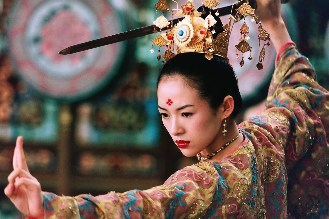
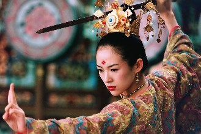

CHINA
Um pouco sobre a China
Geografia:A China é o 3° maior país do mundo em área terrestre, com uma extensão de cerca de 9,6 milhões de km².
Sua geografia é extremamente diversa, com uma variedade de climas, paisagens e recursos naturais.
No noroeste, a China faz fronteira com as montanhas do Himalaia e do Pamir, onde encontra-se a montanha mais alta do mundo, o Monte Everest. A região também abriga o deserto de Gobi, um dos maiores do mundo.
No leste, o país é banhado pelo Mar Amarelo, pelo Mar da China Oriental e pelo Mar da China Meridional, que inclui o Mar de Bohai e o Mar de Taiwan. A maior parte da população chinesa vive nessa região, que inclui as cidades de Pequim, Xangai e Hong Kong.
No sul, a China faz fronteira com Vietnã, Laos, Myanmar, Índia, Butão e Nepal. Essa região é conhecida por suas belas paisagens, incluindo as montanhas Kunlun e as montanhas Tian Shan, além do rio Yangtzé, o 3° maior do mundo.
No oeste, a China faz fronteira com o Cazaquistão, Quirguistão, Tajiquistão, Afeganistão e Paquistão. A região é caracterizada por altas montanhas, vastas planícies e desertos.
No norte, a China faz fronteira com a Mongólia e a Rússia. A região é caracterizada por vastas planícies e desertos, incluindo o deserto de Gobi.
A China é lar de muitas espécies animais e vegetais únicas, incluindo o panda gigante e o leopardo das neves.
História:
A história chinesa é uma das mais antigas e ricas do mundo, com uma civilização de cerca de 5.000 anos.
A China antiga era composta por várias dinastias, que governavam o país por séculos, com um governo centralizado, um sistema de escrita complexo, uma
cultura rica e uma economia desenvolvida.
A dinastia Xia foi a primeira dinastia registrada na história chinesa, e governou entre 2100 a.C. e 1600 a.C.
A dinastia Shang sucedeu a Xia e governou entre 1600 a.C. e 1046 a.C., período em que se desenvolveu a escrita chinesa, o bronze e a agricultura.
A dinastia Zhou sucedeu a Shang e governou entre 1046 a.C. e 256 a.C. Durante este período, a China teve um grande desenvolvimento em áreas como filosofia,
literatura e religião. Foi durante a dinastia Zhou que Confúcio, um dos mais influentes filósofos chineses, viveu.
Em 221 a.C., o imperador Qin Shi Huang unificou a China pela primeira vez, criando o Império Qin.
A dinastia Han sucedeu Qin e governou entre 206 a.C. e 220 d.C., período em que a China se tornou um importante centro comercial e cultural na Ásia.
Após a queda da dinastia Han, a China passou por vários períodos de fragmentação política, incluindo o período das Seis Dinastias e o período Tang.
Durante a dinastia Tang, que governou entre 618 e 907, a China se tornou um dos maiores impérios do mundo, com um grande desenvolvimento cultural e científico.
Durante a dinastia Ming, que governou entre 1368 e 1644, a China experimentou um grande desenvolvimento artístico e cultural, com a construção da Cidade
Proibida e da Grande Muralha da China.
A dinastia Qing sucedeu a Ming e governou entre 1644 e 1911, período em que a China se tornou um importante centro de comércio internacional e sofreu com a
invasão europeia e a perda de sua soberania.
Em 1911, a Revolução Xinhai derrubou a dinastia Qing e estabeleceu a República da China, liderada por Sun Yat-sen.
Em 1949, após uma guerra civil entre o Partido Comunista Chinês e o governo nacionalista, Mao Zedong estabeleceu a República Popular da China, que é o nome
atual do país.
Em dezembro de 2001 a China tornou-se membro da Organização Mundial de Comércio, o que alavancou a economia do país de vários países emergentes que passaram
a fornecer mais matéria prima à China.
Esse evento injetou bilhões de dólares na economia de diversos países, inclusive do Brasil.
Desde então, a China passou por uma série de transformações políticas e econômicas, tornando-se a 2ª maior economia do mundo e um importante player global.
Demografia:
A China é o país mais populoso do mundo, com uma população estimada em mais de 1,4 bilhão de pessoas em 2021. A densidade populacional da China é muito alta,
com uma média de 148 pessoas por km².
A demografia da China também é bastante diversificada. A maioria da população é de etnia Han, que compõe cerca de 91% da população. Outras etnias minoritárias
são os tibetanos, mongóis, uigures, zhuangues e hui.
A taxa de fertilidade da China tem sido baixa nas últimas décadas, o que está fazendo a população envelhecer rapidamente. Em 2021, a idade média na China era de
cerca de 38 anos. Isso representa um aumento significativo em relação à idade média de 22 anos em 1970.
A política do filho único, implementada na China entre 1979 e 2015, também teve um grande impacto na demografia do país. Embora a política tenha sido suspensa
em 2015, muitas famílias ainda preferem ter apenas um filho, o que pode afetar a taxa de crescimento populacional no futuro.
Economia:
A economia da China é a 2ª maior do mundo em termos de produto interno bruto (PIB) nominal, atrás apenas dos Estados Unidos. Em 2020, o PIB da China foi de
aproximadamente US$ 14,7 trilhões, com um crescimento anual de cerca de 2,3%, apesar dos desafios econômicos impostos pela pandemia de COVID-19.
Nos últimos anos, a China passou por uma rápida industrialização e urbanização, o que acelerou o crescimento econômico.
O país é um importante produtor de bens de consumo, eletrônicos, produtos químicos e aço, entre outros, sendo o maior exportador de bens do mundo.
Nos últimos anos, a China também tem investido bastante em pesquisa e desenvolvimento, especialmente em tecnologia. A tecnologia 5G, inteligência artificial,
veículos elétricos e área aeroespacial são algumas das áreas em que a China está investindo alto.
Cultura:
A cultura chinesa é uma das mais antigas e ricas do mundo, influenciada por vários fatores, como filosofia, religião, literatura, arte, música, culinária
e arquitetura.
Algumas das características distintivas da cultura chinesa incluem:
Confucionismo: filosofia que enfatiza a importância da moralidade, da ética e das relações sociais.
Taoísmo: filosofia que enfatiza a importância do equilíbrio e da harmonia na vida.
Caligrafia: forma de arte que envolve a escrita de caracteres chineses com pincel e tinta.
Artes marciais: um ícone cultural chinês, as artes marciais chinesas incluem kung fu, tai chi e wushu.
Cerâmica: a China é conhecida por suas porcelanas e cerâmicas finas, apreciadas em todo o mundo.
Festival da Primavera: feriado que celebra o Ano Novo Chinês e é comemorado com danças, fogos de artifício e reuniões familiares.
Gastronomia: a cozinha chinesa é famosa em todo o mundo por seus sabores e variedade de pratos, como o arroz frito, o macarrão, o dim sum, o pato à Pequim e
muitos outros.
A cultura chinesa tem sido influente em muitas outras partes do mundo, com a disseminação da culinária chinesa, da medicina tradicional chinesa e das artes
marciais em muitos países.
Sistema de governo:
A China é um país comunista com um sistema político de partido único.
O Partido Comunista da China (PCC) é o único partido político legal e domina o sistema político do país.
O presidente da China é o chefe de estado e é eleito pela Assembleia Nacional Popular, o principal órgão legislativo do país.
No entanto, o poder real é exercido pelo Comitê Permanente do Politburo do PCC.
A liberdade de expressão, de imprensa e de associação é limitada, e o governo exerce um amplo controle sobre a internet e as mídias sociais.
O governo chinês tem adotado uma série de reformas econômicas desde a década de 1980, que permitiram ao país se tornar uma das economias mais importantes
do mundo.
A política externa da China é baseada no princípio de não interferência nos assuntos internos de outros países e na busca de relações pacíficas
com outras nações.
A China é membro permanente do Conselho de Segurança da ONU e tem desempenhado um papel crescente no cenário internacional nas últimas décadas.
Religião:
A religião na China é uma mistura complexa de crenças e práticas que incluem taoísmo, confucionismo, budismo, religiões populares e, em menor medida,
cristianismo e islamismo.
As religiões tradicionais chinesas enfatizam a harmonia com a natureza, a importância do culto aos antepassados e a crença na vida após a morte.
O taoísmo é uma filosofia religiosa que enfatiza a busca da harmonia com o tao, ou "caminho", através de práticas como a meditação, a contemplação da natureza
e a prática do wu-wei, ou "não-ação".
O confucionismo, por sua vez, é uma filosofia que enfatiza a importância da moralidade, da virtude e do dever para a sociedade e a harmonia entre as pessoas.
O budismo foi introduzido na China durante a dinastia Han (206 a.C. - 220 d.C.) e se tornou uma religião importante na dinastia Tang (618-907 d.C.). O
budismo chinês se desenvolveu em uma forma única, incorporando elementos do taoísmo e do confucionismo. Algumas das principais escolas de budismo na China
incluem o chan (conhecido como zen no Japão) e o Pure Land.
Além dessas religiões tradicionais, a China também tem uma série de religiões populares praticadas em todo o país. Essas religiões incluem o xamanismo, a
veneração dos deuses e espíritos locais, e a prática de feng shui.
Embora a China seja oficialmente um estado ateu, a liberdade religiosa é garantida pela Constituição e as pessoas são livres para praticar a religião de
sua escolha. No entanto, o governo chinês tem sido criticado por restringir a liberdade religiosa em certas áreas e por reprimir grupos religiosos
considerados uma ameaça à segurança nacional.
Desenvolvimento humano:
De acordo com o Programa das Nações Unidas para o Desenvolvimento (PNUD), o Índice de Desenvolvimento Humano (IDH) da China em 2021 é de 0,761, o que
coloca o país na categoria de alto desenvolvimento humano.
O IDH mede o progresso em 3 dimensões básicas do desenvolvimento humano: renda, educação e saúde.
Em relação à renda per capita, o Banco Mundial estima que o Produto Interno Bruto (PIB) per capita da China em 2021 é de US$ 11.784. Esse valor representa
um aumento significativo em comparação com as décadas anteriores, quando a China era considerada um país de renda baixa.
Desde as reformas econômicas iniciadas no final da década de 1970, a China vem passando por um rápido crescimento econômico, tornando-se a 2ª maior
economia do mundo em termos de PIB nominal.
No entanto, é importante notar que a renda per capita na China ainda é baixa se comparada com outros países de alta renda, como os Estados Unidos ou Japão.
CAPÍTULO 1
Informações úteis
O que um brasileiro precisa para entrar na China?
Para entrar na China, brasileiros precisam obter um visto chinês antes da viagem.O processo de solicitação de visto varia de acordo com o motivo da viagem, como turismo, negócios ou estudos.
Para solicitar o visto, o brasileiro precisa preencher um formulário de solicitação online e fornecer uma série de documentos, incluindo passaporte válido, fotos, passagens aéreas e informações detalhadas sobre a viagem. Dependendo do tipo de visto, pode ser necessário apresentar também documentos adicionais, como carta convite da empresa ou instituição chinesa, comprovantes financeiros, seguro de viagem e atestado de antecedentes criminais.
Antes de viajar, é importante verificar as últimas informações sobre os requisitos de entrada na embaixada ou consulado da China no Brasil ou no site do governo chinês.
Quando ir / O clima
Como a China é um país muito grande, seu clima varia de região para região.De forma geral o país tem um clima temperado, com as regiões mais ao norte sendo mais frias e secas e as regiões mais ao sul tendo um clima subtropical e tropical.
No nordeste, o clima é frio e seco, com invernos longos e gelados e verões curtos e quentes. As temperaturas podem chegar a -30°C no inverno.
A região central do país tem um clima temperado, com invernos frios e secos e verões quentes e úmidos.
A maior parte da precipitação anual ocorre no verão.
No sul, o clima é subtropical ou tropical, com chuvas abundantes durante todo o ano. As temperaturas mais altas do verão geralmente atingem mais de 30°C.
A costa leste é frequentemente afetada por tufões no final do verão e início do outono.
No oeste, o clima varia de árido e desértico a montanhoso e úmido.
O Tibete, a região mais alta do mundo, tem um clima de montanha, com invernos muito frios e verões frescos.
Em geral, a melhor época para visitar a China é na primavera (de abril a junho) ou no outono (de setembro a novembro), quando o clima é mais ameno e agradável. No entanto, o clima pode variar de uma região para outra, por isso é importante verificar as condições climáticas específicas da área que você deseja visitar.
A moeda chinesa
A moeda oficial da China é o yuan, também conhecido como renminbi (RMB), dividida em 10 jiao, que por sua vez são divididos em 10 fen.O yuan é emitido pelo Banco Popular da China, que é o banco central do país.
Desde 2005, o yuan tem sido gradualmente valorizado em relação ao dólar americano, o que reflete o crescente papel da China na economia global. No entanto, a taxa de câmbio do yuan é fortemente controlada pelo governo chinês, o que pode criar tensões com outros países que alegam que o yuan é mantido artificialmente desvalorizado para dar vantagem às exportações chinesas.
O idioma
O idioma oficial da China é o mandarim.O alfabeto chinês é composto por caracteres chineses, chamados de hanzi. Existem cerca de 50.000 hanzis, mas a maioria dos falantes de mandarim usa apenas alguns milhares deles no dia a dia.
Cada caractere é um símbolo que representa uma palavra ou uma parte de uma palavra, e muitas vezes é composto por um radical que indica o significado geral do caractere e um componente fonético que indica a pronúncia.
Além dos caracteres chineses, a China também usa um sistema de transcrição fonética chamado pinyin.
O pinyin usa o alfabeto latino para representar os sons do mandarim, tornando mais fácil para os falantes de outras línguas aprenderem a pronúncia correta do idioma.
Embora o mandarim seja o idioma oficial da China, existem muitos outros dialetos regionais falados no país, como o cantonês, o wu e o xangainês. Esses dialetos têm suas próprias características fonéticas e gramaticais e podem ser tão diferentes do mandarim que podem parecer idiomas completamente diferentes para um fluente em mandarim.
Tomadas e eletricidade
Na China, o tipo de tomada mais comumente utilizado é o padrão chinês de 3 pinos, conhecido como tipo A.Esse tipo de tomada possui 2 pinos chatos paralelos e um terceiro pino maior e aterrado acima deles. Além disso, é possível encontrar outros tipos de tomadas utilizados em locais específicos, como hotéis internacionais, que podem ter tomadas do tipo C (padrão europeu) ou tipo I (padrão australiano).
Quanto à voltagem elétrica, a China utiliza uma voltagem de 220 volts e uma frequência de 50 hertz.


A China é segura?
A China é geralmente considerada um país seguro para turistas e visitantes estrangeiros.Como em qualquer país, existem áreas e situações que requerem cautela, mas os índices de criminalidade em geral são baixos.
No entanto, os visitantes devem estar cientes de possíveis ameaças à segurança relacionadas à saúde pública, especialmente durante epidemias ou pandemias.
Como a China é um país muito grande e diversificado, as condições de segurança podem variar de acordo com a região ou a cidade. Em algumas áreas, como regiões fronteiriças ou de conflito, podem ocorrer problemas de segurança.
Aconselha-se que os visitantes se informem sobre as condições locais de segurança antes de viajar.
Principais cidades
A China possui muitas cidades importantes. Algumas das principais são:* Pequim: capital e centro político e cultural do país. É famosa por seus marcos históricos, como a Cidade Proibida e a Grande Muralha da China, além de seus museus, galerias de arte e teatros.
* Xangai: maior cidade do país, é um importante centro financeiro, comercial e cultural. É conhecida por sua arquitetura moderna, com destaque para a Torre Pérola Oriental, além de suas galerias de arte, museus e restaurantes.
* Hong Kong: cidade autônoma e importante centro financeiro e comercial da Ásia, é famosa por sua paisagem urbana impressionante e vibrante vida noturna.
* Guangzhou: cidade localizada na região sul da China, é um importante centro de comércio e indústria, além de um destino turístico popular. É conhecida por seus templos, parques e museus.
* Shenzhen: cidade moderna e cosmopolita, é um importante centro de tecnologia e inovação. É famosa por seus parques temáticos, como a Universidade de Pequim, e suas lojas e restaurantes modernos.
* Chengdu: cidade localizada na região central da China, é famosa por sua cultura gastronômica e por ser o lar dos pandas gigantes. Também é conhecida por seus templos e parques históricos.
CAPÍTULO 2
Um pouco sobre a China
Porque ir à China? O que te espera por lá?
A China é um país bastante interessante de se conhecer. Há partes do país que são ultramodernas, outras que evocam o passado histórico chinês e outras em
que há uma exuberante beleza natural.Seja qual for tipo de ambiente, há espaço para todos os gostos na China.
Embora o país tenha sérios problemas com relação à direitos humanos e ao desrespeito às liberdades individuais, inclusive alguns que podem afetar à turistas, se você for sabendo o que esperar e se adequar, não deve ter problemas.
Não se envolva em discussões políticas e confrontações culturais, sobre como você acha que as coisas deveriam ser por lá.
Ninguém vai ligar para o que você acha, e você pode se encrencar. Então não queira bancar o herói ou o questionador politizado.
Eu não cheguei a conhecer a China continental, apenas 2 cidades que possuem uma administração autônoma com uma certa liberdade das garras do governo chinês (o que infelizmente vem mudando com o passar dos anos e o desrespeito do governo chinês à tratados assinados).
Apesar dos problemas causados por seu governo ditatorial, a China tem uma série de motivos que fazem uma visita valer a pena, dentre eles:
Seu gigantesco patrimônio cultural, fruto de uma história milenar, com inúmeros locais reconhecidos mundialmente, como a Grande Muralha da China, a Cidade Proibida em Pequim e os Guerreiros de Terracota em Xi'an.
A grande variedade de paisagens naturais do país, que vão desde as montanhas escarpadas de Zhangjiajie até os terraços de arroz de Longsheng. A região de Guilin é famosa por suas colinas de calcário, rios sinuosos e cavernas espetaculares.
A culinária chinesa, uma das mais diversas do mundo, tem cada região tendo suas próprias especialidades culinárias, do picante e saboroso Mapo Tofu de Sichuan aos famosos Dim Sum de Hong Kong. Experimentar a autêntica comida chinesa é uma experiência imperdível para os amantes da gastronomia.
A impressionante arquitetura chinesa, que vai de antigos templos e palácios aos arranha-céus modernos e projetos arquitetônicos inovadores, como a Torre Pérola Oriental em Xangai e o Estádio Nacional de Pequim (conhecido como Ninho do Pássaro) construído para os Jogos Olímpicos de 2008.
A experiência cultural de conhecer um lugar tão diferente do Brasil, a chance de participar de festivais tradicionais, aprender caligrafia ou tai chi, explorar os mercados locais para descobrir produtos tradicionais e artesanais, ver de perto os avanços tecnológicos do país que nos fazem pensar que viajamos para o futuro, conhecer a hospitalidade e a amabilidade do povo chinês, conhecidos pelo calor humano, dentre outros motivos, fazem a ida ao país valer a pena.
Você será recebido de braços abertos e terá a oportunidade de conhecer pessoas amigáveis, compartilhar histórias e fazer novas amizades durante sua visita. Claro, isso varia de lugar para lugar, e nas grandes cidades as pessoas tendem a ser mais fechadas, mas ainda assim, os chineses costumam ser simpáticos com estrangeiros.
CAPÍTULO 3
A Culinária Chinesa
A culinária chinesa é uma das mais variadas e influentes do mundo, com uma história de mais de 2000 anos.Existem 8 principais escolas culinárias regionais na China, cada uma com suas próprias características.
Algumas especialidades da culinária chinesa que são populares em todo o mundo incluem:
Arroz frito: arroz cozido frito com legumes, ovos e carnes.
Frango com amendoim: pedaços de frango cozido com amendoim e molho de soja.
Dim Sum: uma variedade de pequenos pratos tradicionais chineses, incluindo dumplings, rolinhos primavera, bolinhos cozidos a vapor, entre outros.
Pato à Pequim: pato assado e crocante servido com panquecas, cebolinha, pepino e molho de soja.
Chow Mein: macarrão frito com legumes, carne ou frutos do mar.
Frango Kung Pao: frango picante com pimentões, amendoim, cebola e molho de soja.
Won Ton: sopa feita com won tons (massa recheada com carne ou legumes) e caldo de frango ou porco.
Mapo Tofu: tofu em cubos em um molho apimentado de carne moída, feijão preto e especiarias.
Hot Pot: sopa quente em uma panela dividida em dois lados, com um lado com um caldo levemente temperado e o outro lado mais picante, em que as pessoas cozinham os ingredientes escolhidos.
Esses são apenas alguns exemplos de pratos da culinária chinesa, que possui uma variedade enorme, com sabores e ingredientes únicos.
CAPÍTULO 4
A China na Cultura Pop
A China é um país com uma cultura rica e diversa que vem cada vez mais influenciado a cultura pop em todo o mundo. Aqui estão alguns exemplos de como a
China é representada na cultura pop:
Filmes:
A China é o lar de uma das maiores indústrias cinematográficas do mundo.
No início do anos 2000 teve início uma onda de filmes chineses que ganharam fama internacional, como O Tigre e o Dragão (2000), Herói (2002) e O Clã das
Adagas Voadoras (2004).
Alguns dos filmes chineses que eu indicaria, são:
* Fervura Máxima (hard-boiled / lat sau san taam, 1992): durante investigações sobre o contrabando de armas para Hong Kong, um policial é morto
durante uma batida em uma casa de chá. Um detetive, parceiro do policial morto decide investigar os 2 principais contrabandistas de armas da cidade, que estão
em guerra por território pelo mercado de armas local. Agindo com ajuda de um informante, o detetive fica mais próximo do círculo de líderes e eventualmente
acaba tendo que trabalhar diretamente com este informante. Ótimo filme de ação incessante. Você nunca vai ver tanto tiro em um só filme como neste, isto eu
garanto. Um clássico! 👍👍👍👍
* O Mestre das Armas (fearless / huo yuan jia, 2006): filme baseado na história real de uma lenda das artes marciais, Huo Yuanjia, o lutador mais
famoso da China no final do Século XX. Anos de treino permitiram à Huo vencer todas as suas lutas na região de Tianjin. Após uma luta que levou à morte de
outro lutador, os membros da família de Huo são assassinados como vingança. Enlutado e envergonhado, Huo vaga pelo país em estado de choque. Próximo da morte,
ele é resgatado por uma mulher de um vilarejo, e com a gentileza e generosidade dos moradores ele acaba se recuperando e reavendo seu equilíbrio após vários
anos. Huo percebe que o futuro das artes marciais está nos esportistas, e não na brutalidade, e decide voltar à sociedade para ensinar o que ele aprendeu.
Voltando à Tianjin, Huo busca acertar as contas com seu passado e restaurar o nome de sua família. Ele atinge novamente o sucesso e funda a Federação de
Esportes Jingwu. Percebendo isso, membros da Câmara de Comércio Exterior organizam um torneio em Xangai colocando Huo contra 4 lutadores; cada um representando
um importante poder estrangeiro na China. Huo luta conta um boxeador britânico, um espadachim espanhol, um soldado belga e um lutador japonês. 👍👍👍👍
* O Tigre e o Dragão (crounching tiger, hidden dragon / wo hu cang long, 2000): no começo do Século XIX na China, nos últimos anos da dinastia Qing,
o famoso espadachim Li Mu Bai decide abandonar sua lendária Espada Verde do Destino, uma afiada lâmina de 400 anos. Para marcar o fim de sua carreira sangrenta,
Li confia à guerreira Yu Shu Lien a missão de entregar a espada ao Governante Yu. Porém um misterioso ladrão consegue roubá-la. Enquanto Shu Lien está atrás
do ladrão, paixões ferventes e um enorme desejo de liberdade e sentimento de perda ficam pelo caminho. Com tudo isso Mu Bai se pergunta se pode se livrar de
seu passado violento. 👍👍👍👍
* O Clã das Adagas Voadoras (house of flying daggers / shi mian mai fu, 2004): durante o reinado da Dinastia Tang, uma organização secreta chamada
Casa das Adagas Voadoras surge e se opõe ao governo. Um policial chamado Leo envia o oficial Jin para investigar a jovem dançarina Mei, afirmando que ela tem
ligações com as Adagas Voadoras. Leo prende Mei, mas Jin a liberta em uma armação para ganhar a confiança dela e levar a polícia ao novo líder da organização
secreta. 👍👍👍👍
* Herói (hero, 2002): na China antiga o Império Qin está decidido a conquistar os 6 reinos. Isso torna seu rei um alvo de atentados. Entretanto, um
homem sozinho garantiu a segurança do rei, matando os 3 assassinos mais famosos da região. Tratado como herói, ele é convocado para uma audiência com o rei,
e lá ele conta a história de seus feitos. 👍👍👍👍
* Flores do Amanhã (sunflower / xiang ri kui, 2005): o filme retrata o relacionamento entre um pai e seu filho tendo como pano de fundo o regime
maoísta na China no meio do Século XX. O pai, um pintor, é internado em um campo de "reeducação" e perde a habilidade de pintar. Ele ensina seu filho a
desenhar, mas faz isso de maneira obsessiva. O conturbado relacionamento entre eles que se estendeu até a vida adulta do filho vai se resolvendo de maneira
impressionante e emocionante. Interessante notar as diferenças da China entre as épocas em que o filme se passa. 👍👍👍👍
* Assombração (re-cycle / gwai wik, 2006): após escrever 3 best-sellers sobre histórias de amor baseadas em suas experiências pessoais, a escritora
Tsui Ting-Yin está sem inspiração e com dificuldade em escrever seu novo livro de terror chamado Re-cycle. Enquanto fazia o esboço do texto, eventos
estranhos acontecem no seu apartamento. Quando Tsui vê um personagem sobrenatural de seu livro, ela o segue e fica presa no seu mundo de terror. Lá ela
conhece o jovem Ting-yu, que revela um segredo sobre o ser sobrenatural à Tsui. 👍👍👍👍
* Beyond Our Ken (gung ju fuk sau gei, 2004): Shirley é garçonete em um karaokê e certo dia é confrontada por Ching, ex-namorada de Ken, atual
namorado de Shirley. Ching avisa à Shirley que ele tem um passado sombrio. Após contar sua história, Ching explica que perdeu seu emprego e sua honra por
causa de Ken. Shirley inicialmente duvida, mas depois acaba acreditando e decide ajudar Ching à entrar no apartamento de Ken para apagar fotos que ele
ainda tem dela. Com medo de acabar igual a Ching, Shirley se junta à ela contra Ken. 👍👍👍
* A História de Ricky (story of ricky / lik wong, 1991): Ricky é um homem bom, mas que acaba indo para a prisão por vingar a morte de sua namorada. Na
prisão ele presencia a injustiça de um sistema prisional corrupto e desumano, que vê os presos como baratas e no qual os detentos mais fortes abusam dos mais
fracos. Após a morte de um amigo que Ricky fez na prisão, Ricky acaba descobrindo um laboratório de ópio dentro da cadeia, e declara guerra à direção do
presídio. O filme é extremamente violento, chegando a ser cômico em alguns momentos, tamanho os exageros das cenas. Embora o enredo busque uma seriedade, a
atuação dos atores faz o filme parecer uma comédia. Sobre a violência, você verá corpos mutilados, triturados, perfurados e explodidos, tudo através de efeitos
especiais não muito convincentes, mas para o público ao qual o filme se destina, isso é um "charme" a mais. É um filme único no cinema de Hong Kong, e que
provavelmente jamais será igualado. 👍👍👍
* Tempestade de Fogo (firestorm / feng bao, 2013): uma tempestade devastadora se aproxima de Hong Kong. Enquanto a cidade aguarda pela tempestade,
outra força destrutiva a ataca: criminosos liderados pelo famoso Nam, que não demonstram piedade por ninguém que fique pelo caminho. As ações do grupo
humilham a polícia, e o inspetor Lui está decidido à por um fim ao império do crime de Nam e sua gangue. Logo ele percebe que as táticas padrão da polícia
são inúteis para mandar esses criminosos para a cadeia. O crime extremo requer justiça extrema, mesmo que isso signifique cruzar a linha da legalidade e
da moralidade. Tou, um ex-condenado desesperado para deixar seu passado criminoso para trás se voluntaria para ser infiltrado de Lui em troca de um novo
começo. Mas ele mal poderia imaginar na situação infernal em que estava se metendo. 👍👍👍
* Kung Fusão (kung fu hustle, 2004): em Xangai, nos anos 1940, Sing, um aspirante a gangster sonha em se juntar à famosa Gangue do Machado. Ele
acaba parando em uma conjunto habitacional controlado por proprietários no mínimo estranhos, que possuem uma rara habilidade em kung fu. As ações de Sing
acabam levando à um confronto entre a Gangue do Machado e os morados do conjunto. 👍👍👍
* Frente à Frente (raging fire / nou fo, 2021): o policial Cheung é um oficial da Unidade Regional de Crime que trabalhou na linha de frente contra
o crime por muitos anos. Quando uma gangue de assaltantes de banco mata um policial, fica à cargo dele a missão de capturá-los. Acontece que o líder dessa
gangue é Yao, seu ex-parceiro na polícia, que acabou se voltando ao mundo do crime. Agora, os 2, antes parceiros na polícia, são inimigos. 👍👍👍
* Police Story - A Guerra das Drogas (police story / ging chaat goo si, 1985): Kevin Chan é um policial de Hong Kong que faz seu primeiro grande
trabalho ao prender praticamente sozinho um grande chefe do tráfico de drogas. É claro que o traficante não gosta nem um pouco disso e incrimina injustamente
Kevin pelo assassinato de outro policial. Agora Kevin está decidido à limpar seu nome enquanto foge tanto dos traficantes quanto da polícia. 👍👍👍
* A 36ª Câmara de Shaolin (the 36th chamber of shaolin / shao lin san shi liu fang, 1978): os patriotas anti-Ching, sob comando de Ho Kuang-han,
secretamente montam sua base no Cantão, disfarçados de professores. Durante um brutal ataque dos Manchus, Lui consegue escapar e se dedica à aprender
artes marciais para buscar vingança. Em um curto período de tempo ele precisa dominar as artes marciais, além do uso de espadas, varas e lanças. Se conseguir
passar por 36 desafios ele poderá ser um mestre shaolin e estará preparado para sua vingança. O legal do filme é o foco na evolução do personagem, meio no
estilo Rocky. O filme é bem inspirador no sentido de mostrar o esforço na evolução através de pequenas etapas até que ele esteja preparado para a batalha
final. 👍👍👍
* Prisioneiro do Inferno (prison on fire / gam yuk fung wan, 1987): drama de ação que mostra a história e os laços de amizade entre 2 detentos de
um presídio de Hong Kong. Juntos eles terão que sobreviver as dificuldades da prisão enquanto aguardam o fim de suas penas. 👍👍👍
* A Fúria do Dragão (fist of fury / jing wu men, 1972): voltando à Xangai para se casar com sua noiva, Chen Zhen, um aluno do renomado mestre de
artes marciais Huo Yuanjia, descobre que seu mestre morreu. Durante o funeral, membros de uma escola japonesa de judô aparecem e insultam os alunos chineses.
A provocação continua, com Chen revidando. É aí que ele descobre a verdade: seu mestre foi envenenado por ordem do mestre do dojo japonês. A partir de então
ele inicia uma missão de vingança. Meu filme preferido do Bruce Lee. 👍👍👍
* Operação Dragão (enter the dragon, 1973): Lee é recrutado por uma agência para investigar um campeonato de artes marciais organizado por Han, já que
acreditam que há tráfico de ópio no torneio. Roper e Williams são antigos amigos do exército desde a Guerra do Vietnã e entram no torneio por diferentes
problemas que eles enfrentam. O filme acompanha a trajetória dos 3 no torneio mortal. Produção conjunta entre Hong Kong e EUA, este é sem dúvida um dos
maiores clássicos da história dos filmes de luta. 👍👍👍
 
Embora o mercado de games tenha sido controlado pelo governo por anos na China, as coisas parecem estar mudando, com desenvolvedoras de games aparecendo pelo país, inclusive agora com incentivo estatal. Entre as maiores empresas de games da China estão a Tencent, a NetEase e a Lilith Games.
Há vários jogos com personagens e cenários chineses nos games, especialmente em jogos de luta.
Entre os principais exemplos, podemos destacar:
Street Fighter: a franquia de jogos de luta Street Fighter tem personagens e cenários chineses clássicos, como a lutadora Chun-Li, da China continental e o lutador Fei Long, de Hong Kong, que é inspirado em Bruce Lee.
Sleeping Dogs: jogo de ação em mundo aberto que se passa em Hong Kong. Os jogadores assumem o papel de Wei Shen, um policial disfarçado, em sua missão para se infiltrar em uma organização criminosa chinesa. Um excelente jogo que não fez o sucesso que merecia.
Mortal Kombat: embora a franquia Mortal Kombat não tenha um personagem declaradamente chinês, alguns personagens têm origem chinesa ou elementos da cultura chinesa. Um exemplo é o monge shaolin Liu Kang.
Tekken: franquia de jogos de luta que conta com personagens chineses como a lutadora Ling Xiaoyu e Lei Wulong, um detetive de Hong Kong.
King of Fighters: franquia de jogos de luta que apresenta vários personagens chineses, como Shun'ei, Chin Gentsai, Duo Lon, Tung Fu Rue, Meitenkun, Shion, Sie Kensou e Wan-Fu.
Dead or Alive: franquia de jogos de luta que possui personagens chineses, como Lei Fang, lutadora especialista em artes marciais tradicionais chinesas, e Jann Lee, lutador inspirado em Bruce Lee.
Assassins Creed Chronicles - China: jogo de plataforma em 2.5D, da famosa franquia da Ubisoft, ambientado na China. Segue a história da assassina chinesa Shao Jun durante a dinastia Ming.
Dynasty Warriors: franquia com uma série de jogos de ação baseada no romance histórico chinês "Romance dos Três Reinos". Os jogos retratam batalhas épicas com personagens chineses icônicos.
Total War - Three Kingdoms: jogo de estratégia em tempo real que se passa durante a época dos Três Reinos na China antiga. Os jogadores assumem o controle de diferentes facções chinesas enquanto lutam pelo controle do país.
Música:
A música chinesa inclui vários gêneros, como a música tradicional chinesa, a música pop chinesa (mandopop) e a música cantonesa (cantopop). Artistas como
Teresa Teng, Jay Chou e Faye Wong se tornaram ícones culturais chineses em todo o mundo.
Entras as bandas/artistas que eu indicaria estão:
Punk e Hardcore:
King Ly Chee: banda hardcore de Hong Kong, formada em 1999. O vocalista da banda, Riz, tem um excelente portal dedicado à divulgação do
hardcore/punk/metal/oi asiático, o Unite Asia (https://uniteasia.org/). Faça um favor à si mesmo e
veja o vídeo de Lost in a World no Youtube ou ouça Queen's Pier!
Rain in Time (及時雨): banda indie-punk com vocal feminino em cantonês, formada em 2008 em Hong Kong. Ouça 一岸之遙 e me agradeça depois :)
Choco: banda pop punk de Hong Kong formada apenas por mulheres. Ouça衝!衝!衝! e Follow me.
Yau Dong (遊蕩): hardcore de Hong Kong com uma pegada metal, em inglês. Ouça Fight for Honor (tem vídeo no Youtube).
Fight Club: hardcore metal moderno de Hong Kong. Assista ao vídeo de Train, primeiro vídeo oficial da banda, que conta com cenas de acidentes com o trem
Thomas (WTF?).
Brain Failure (脑浊 / Nǎozhuó): banda punk rock em inglês e mandarim, formada em 1997 em Pequim. Visivelmente inspirado em Rancid e The Clash.
Yau Dong (遊蕩): hardcore de Hong Kong com uma pegada metal, em inglês. Ouça Fight for Honor.
Fight Club: hardcore metal moderno de Hong Kong. Assista ao vídeo de Train, primeiro vídeo oficial da banda, que conta com cenas de acidentes com o
trem Thomas (WTF?).
Oi Squad: banda oi! de Hong Kong que toca um som enérgico e com influências do punk e do street punk.
Dagger: banda metalcore que é praticamente um all star team do hardcore de Hong Kong, com membros do King Ly Chee, Yau Dong e Fight Club.
Seasons for Change: post punk / rock alternativo de Hong Kong, em inglês.
Reflector (反光镜乐队): banda punk rock melódico em mandarim, formada em Pequim em 1997.
Dagger: banda metalcore que é praticamente um all star team do hardcore de Hong Kong, com membros do King Ly Chee, Yau Dong e Fight Club.
Post hardcore / metalcore:
Instinct of Sight: post hardcore / emo metal em cantonês, formada em Hong Kong em 2014.
Cosmos (萬象): post hardcore / indie em mandarim.
Soul of Ears: metalcore/post hardcore de Hong Kong com elementos eletrônicos, formada em 2010.
Indie rock:
Hybrid Stereo: indie rock de Hong Kong, em inglês e com vocal feminino. Embora a banda seja de Hong Kong, ela é formado por imigrantes das Filipinas. Ouça
Museum of Memories e me agradeça depois ;)
KASA: cantor de indie rock de Hong Kong, em inglês e japonês. Ele é japonês, mas desde criança vive em Hong Kong. Ouça a música Clocks ;)
Restate de Moira: rock alternativo / power pop com vocal feminino em inglês, de Hong Kong. Ouça Poison (a versão em inglês é boa, mas a versão
em japonês é ainda melhor!).
The Yours: indie rock/guitar band de Hong Kong em inglês.
Metal:
Black Kirin (黑麒): death metal melódico com elementos folk, formada em 2012 em Changchun. Lembra Children of Bodom, mas com elementos únicos chineses.
Suas letras abordam temas históricos e guerras. Ouça 投名狀 ou黃河 e você terá uma boa ideia da proposta musical da banda.
Dreamspirit (梦灵 / Mengling): banda heavy / folk metal formada em Taian em 2005. Agora a banda está estabelecida em Pequim. Suas letras abordam a história
chinesa antiga.
Tang Dynatsy (唐朝): banda heavy/rock/folk metal, formada em Pequim em 1989. Após o massacre na Praça da Paz Celestial, alguns membros originais da banda
tiveram que se mudar do país e a banda mudou de formação.
Nine Treasures (九宝 /九大圣器): banda folk metal de Pequim, formada em 2010. Os membros são originários da Mongólia e as músicas são em mongol.
CharmCharmChu (慘慘豬): banda thrash metal em cantonês, formada em Hong Kong em 2009. As letras abordam de poesias Tang à questões políticas e memes de
internet.
Evocation (招魂): banda death metal de Hong Kong com músicas em cantonês.
Fiester: metal modernoso de Hong Kong formado por mulheres. Instrumental meio metalcore, com elementos eletrônicos e letras em cantonês.
逆流: banda de metal modernoso em cantonês, formada em 2011 em Hong Kong.
Rock:
The Boogie Playboys: banda rock n' roll clássica de Hong Kong, estilo anos 1950. Ouça往田納西州的夜行火車 e仲夏獨舞 Lonely Dance.